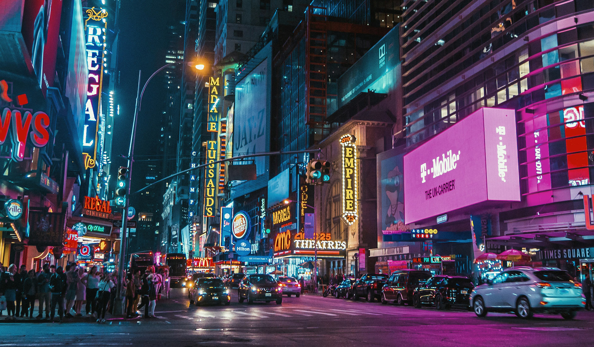
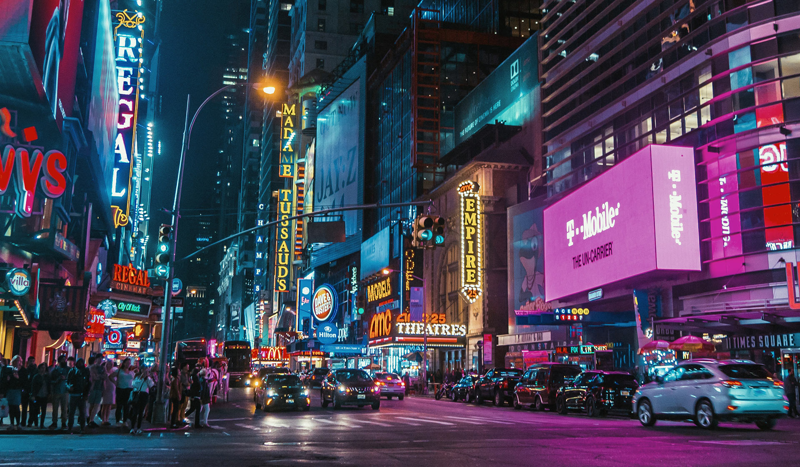

| HongKong Street | |
|---|---|
| Before | After |
 |
 |
| NewYork Street | |
| Before | After |
|  |  |
My name is Ding Shaobo. You can also call me Eric. I am an
18 years old boy from China, JiangXi province, Nanchang city. During
my high school period, I participated in mathmatics competition which
helped me open my mind and made me a person who has a great passion
for learning new things and challenging difficult problems. Since 2018, I came
to Singapore for a new challenge. I received an scholarship program to come
to Singapore and became a undergraduate student in Nanyang Technological University.
For now, I am a year 1 student who majors in Electrical & Electronic Engineering.
After came to Singapore, in order to exercise and participated in social volunteer works. I joined the Tongjong Paga Youth Soccer team.
Cyberpunk style works
These two pictures were made through Camera Raw filter. Basically, I reduced color temperature and increase hue. After that, I tried to push all the other colors to red, blue and purple.
| HongKong Street | |
|---|---|
| Before | After |
| |
|
| NewYork Street | |
| Before | After |
|  | |
My original work
For this one, I drew some basic wave shapes and used the projection tool.